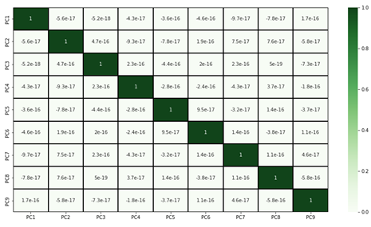
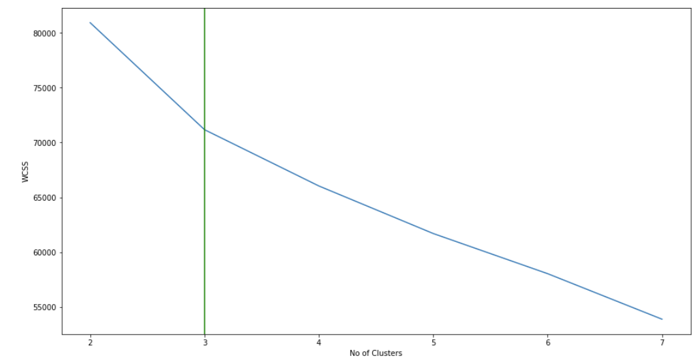
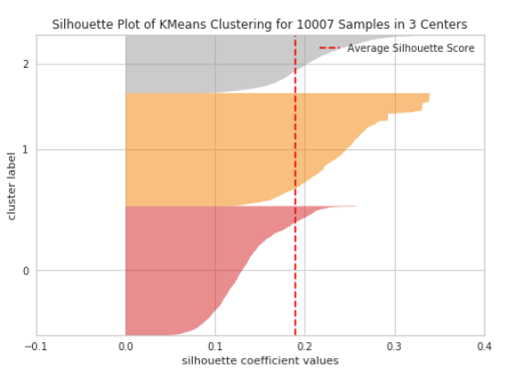
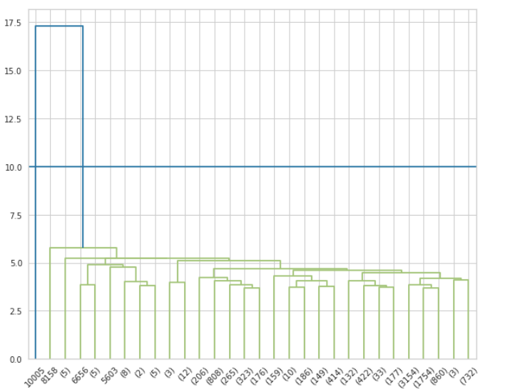
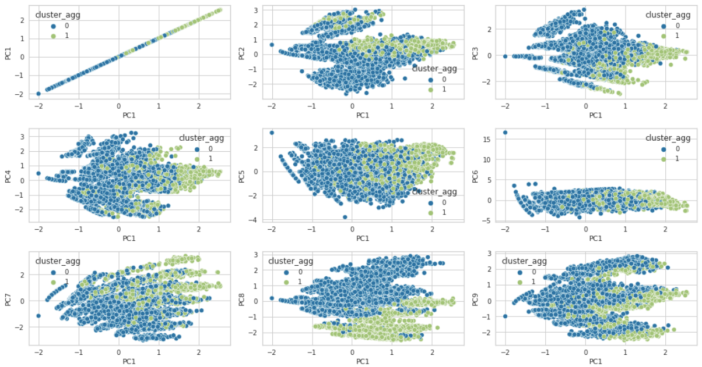
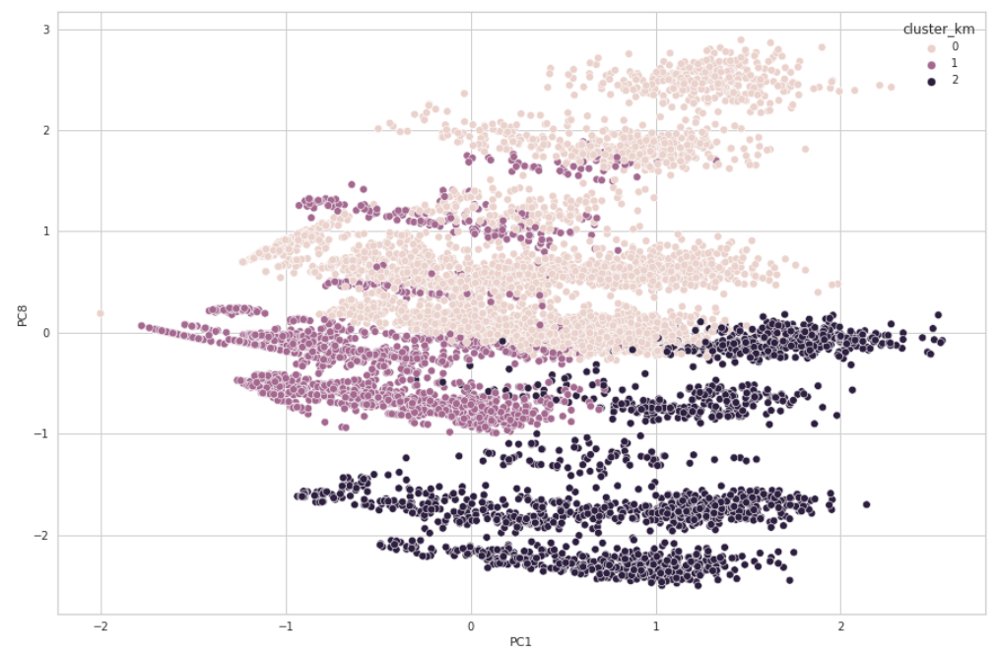
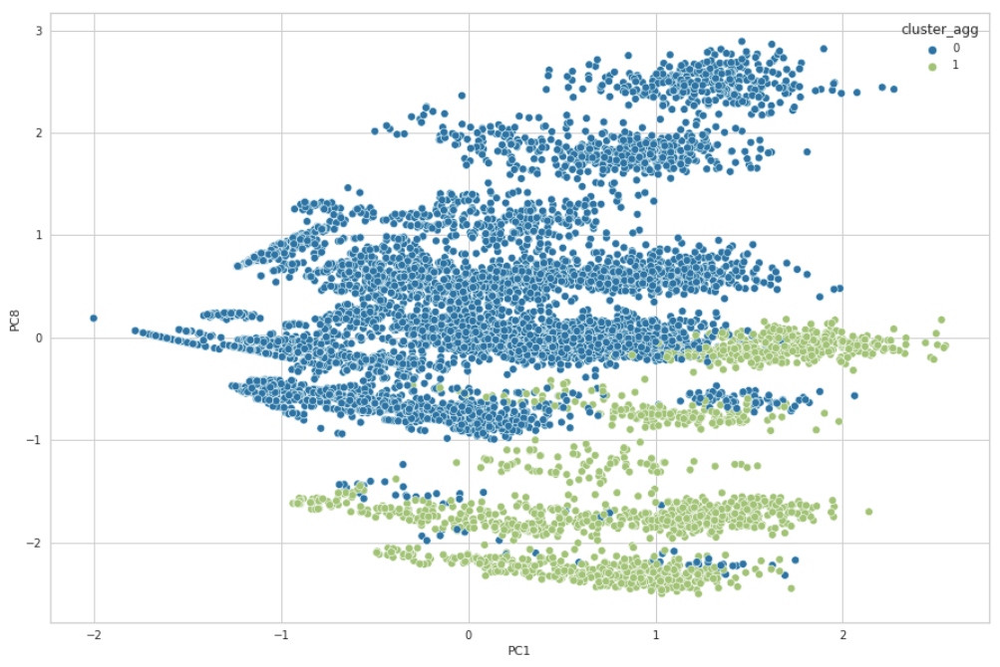
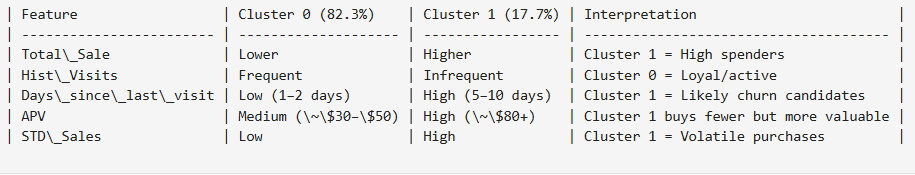

This dataset captures customer behavior and purchase patterns from an e-commerce platform. The
goal is to use this data to segment customers, understand purchasing habits, and identify
opportunities for marketing, retention, and personalization strategies.
This dataset contains weekly behavioral and monetary information about 10,000 e-commerce
customers. Key variables include total sales, weekly visits, purchase value, and recency. I
used this data to segment users and build predictive models for customer behavior.
Data Preprocessing
Descriptive statistics and correlation checks were conducted to understand feature behavior.
Outliers in sales were addressed using a power transformer, preserving data integrity. Features
were normalized with StandardScaler. To mitigate multicollinearity, PCA was applied, retaining
9 components that explained approximately 90% of the variance. Post-PCA, low inter-component
correlation was verified to ensure the data was suitable for clustering.

PCA Heat Map
Clustering Models — K-Means & Agglomerative

WCSS

Silhouette Plot

Dendrogram
We evaluated both K-means and Agglomerative clustering to segment customers. Although both had
similar silhouette scores, Agglomerative clustering produced more visually distinct clusters.
We confirmed this using cophenetic coefficients and silhouette analysis. To validate cluster
quality, I trained a classifier that achieved an F1 score of 1.0, showing strong separability.

Combination Scatter Plot
We tested several combinations of PCA components and selected PCA component 1 (PC1) and PCA
component 8 (PC8). PC1 represents monetary value (sales and customer value), and PC8 captures
behavioral volatility and recency. These provided meaningful cluster spread for business
interpretation.

K-Means Scatter

Agglomerative Scatter
Although both K-Means and Agglomerative clustering produced similar silhouette scores, the
scatter plots using PC1 and PC8 revealed a key difference: Agglomerative clustering yielded
clearly separated clusters, while K-Means showed overlapping decision zones. Since visual
separation often reflects better real-world interpretability, we selected Agglomerative
clustering as our final model.
Model Evaluation
A Random Forest classifier trained on the PCA-transformed data and cluster labels achieved an
F1 score of 1.0 for Agglomerative clustering, confirming high separability and meaningful
segmentation.
PCA Loadings & Interpretation
PCA loadings helped interpret key customer dimensions: PC1 reflected spending power (Total
Sales & Value), PC2 captured engagement (visits & recency), and PC3 highlighted
volatility in purchasing. These insights shaped actionable segmentation for retention and
marketing strategies.

Inference Plot
Cluster 0 represents consistent, lower-spending but engaged users, while Cluster 1 consists of
less frequent yet high-value purchasers.
Suggested strategies
Cluster 0: Introduce loyalty programs and promote bundled offers to encourage higher spend.
Cluster 1: Run win-back campaigns, showcase premium products, and send timely reminders to drive re-engagement.
These insights help inform targeted marketing and retention strategies tailored to distinct
customer behaviors.